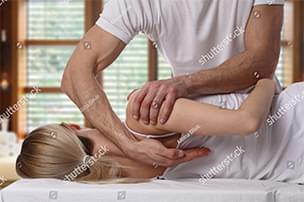
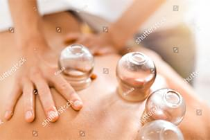
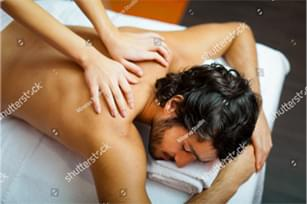
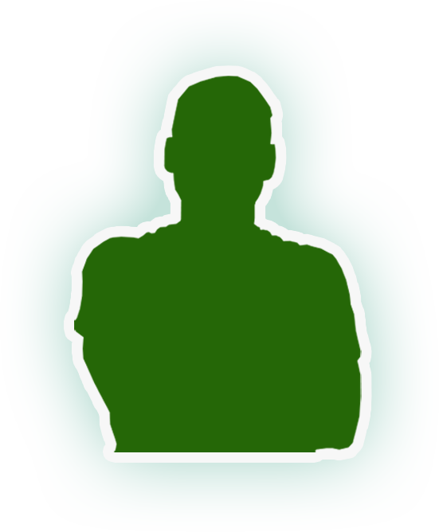
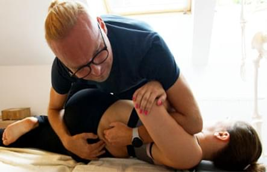
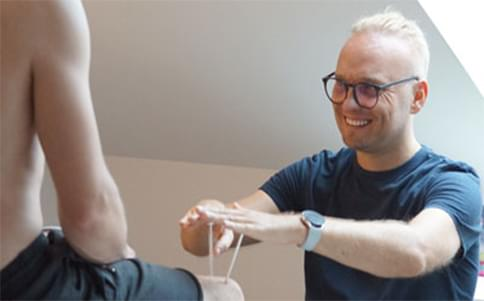
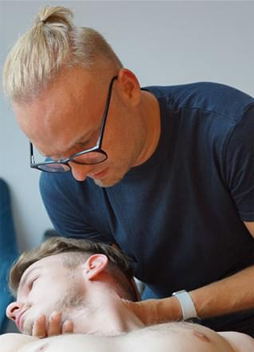
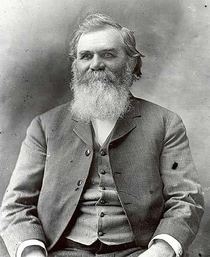

Terapia manualna - Gdańsk
Chiropraktyka
Masaż kręgosłupa
Klawiterapia
Trójmiasto

Kręgarz
Chiropraktyka
Terapia Manualna
Za pomocą terapii manualnej poprzedzonej przez masaż głęboki można
skutecznie wyleczyć zdecydowaną większość schorzeń bólowych opartych na stawach,
kręgosłupie, mięśniach i skorygować późniejszą postawę pacjenta. Dzięki terapii
unikniesz nieprzespanych nocy, dyskomfortu w codziennym funkcjonowaniu, zażywania leków
przeciwbólowych i operacji.

Banki
Akupresura
Klawiterapia
Chińskie Bańki są świetnym narzędziem do rozluźnienia pospinanych mięśni umożliwiając
przy tym odpowiednią korektę postawy pacjenta. Klawiterapia pozwala poprawić
funkcjonowanie stawów, odblokowuje spięcia, rozmasowuje blizny i ułatwia dalszą prace
manualną terapeuty. Akupresura poprzez działania na konkretnych punktach, pozwala
korzystnie wpływać na osłabione organy pacjenta.

Masaż blizn
Masaż migrenowy
Masaż powłok brzusznych
Masaż antymigrenowy uspokoi pacjenta i zniweluje napięcie migrenowe,
kolejne sesje wokół połączenia głowowo-szyjnego znacznie zredukują częstotliwość
objawów. Masaż blizn (również klawikami) pomoże pacjentowi uniknąc wielu dotkliwych
dolegliwości z nimi związanymi. Masaż powłok brzusznych lub masaż głowy jest często
bardzo pomocny przy dolegliwościach związanych z tym zakresem ciała. Masaż klasyczny
odpręży przemęczonego pacjenta.

Dobra Terapia jest
tym czego potrzebujesz!
Nazywam się Tomasz Posiadała, jestem certyfikowanym
chiropraktykiem, liderem zespołu zajmującego się terapią manualną, chiropraktyką i
masażami. Naszą metodykę pracy i techniki w terapii manualnej nazywamy "dobrą terapią". Jeśli
jesteś na tej stronie pierwszy raz, lub nie wiesz na czym polega terapia manualna kliknij...
- cierpisz z powodu bólu lub innych dolegliwości,
- dotychczasowe leczenie jest nieskuteczne,
- nie można znaleźć przyczyny dolegliwości,
- dolegliwości nawracają,
- zażywasz środki przeciwbólowe,
- nie możesz spać i pracować,
- szukasz innych rozwiązań, zanim zdecydujesz się na operację,
- po operacji wróciły dolegliwości, jesteś zmęczony, zestresowany, zniechęcony i nie masz nadziei na poprawę
Czym jest chiropraktyka i terapia manulana
Liczba ludzi ze schorzeniami kręgosłupowymi, choć ciężka do oszacowania,
jest
niezwykle duża. Mimo tego wciąż niewiele osób wie, że istnieje dziedzina medyczna, zwana
terapią
manualną, która bardzo szybko przywraca zdrowie. Na szczęście liczba tych, którzy
znaleźli
ukojenie
dzięki terapii manualnej rośnie w coraz większym tempie, skutecznie pomniejszając szeregi
chorych.

Co to jest terapia manualna?
Terapia manualna jest metodą masaży fizjoterapeutycznych sięgająca swoich
początków już w czasach starożytnych. Głównym jej kierunkiem działania jest wspomaganie
kręgosłupa i stawów. Podczas zabiegu oprócz klasycznego masażu stosowane są specjalistyczne
chwyty, dźwignie, manipulacje, mobilizacje. Poprzez te działania terapeuta jest w stanie
przywrócić ruchomość stawów, zniwelować ból, odzyskać czucie. Nasza terapia opiera się na
umiejętnym czerpaniu z wachlarza różnych technik. Częścią "dobrej terapii", czyli terapii
manualnej stosowanej w naszym gabinecie jest też chiropraktyka, klawiterapia, akupresura i
terapie oparte na bańkach.
Co to jest chiropraktyka?
Chiropraktyka jest dziedziną terapeutyczną, ale też i sztuką. Głównym założeniem
chiropraktyki jest to, że nasz mózg wysyła informacje poprzez kręgosłup i nerwy do wszystkich
organów na określonych obszarach ciała. Chiropraktyk poprzez odpowiednią manipulację ciała stara się
doprowadzić do implozji wewnątrz stawu, co w dalszej konsekwencji wprowadza płyn wewnątrz-stawowy do
środka. Działanie to pobudza naturalną zdolność organizmu do regeneracji, a docelowo przywraca
równowagę układu ruchu pacjenta na obszarze powiązanym z miejscem manipulacji.
Co to jest klawiterapia?
Klawiterapia to polska sztuka rehabilitacyjna zapoczątkowana przez doktora
Ferdynanda Barbasiewicza. Za pośrednictwem specjalnych przyrządów nazywanych klawikami terapeuta
wzbudza utracone przewodnictwo nerwowe poprzez ucisk chorego miejsca, punktów spustowych lub
odpowiedniej konfiguracji (i kolejności bodźcowania) kilku takich punktów na raz (powodując tzw.
zwarcia). Przyrząd ten mimo tego, że wygląda na ostry, nie powinien naruszać naskórka pacjenta.
Klawiki poprzez bodźcowanie potrafią wytworzyć proces samoregeneracji pacjenta na określonych
organach i są skuteczne w leczeniu bardzo wielu chorób, również tych poza układem ruchu
pacjenta.

Co to jest terapia próżniowa (bańkami)?
Wywodząca się z tradycyjnej medycyny chińskiej terapia bańkami liczy sobie kilka
tysięcy lat. Metoda ta polega na nałożeniu bańki na wybrane miejsce w ciele, a następnie (lub przed
nałożeniem) wywołaniu w niej ciśnienia. Czasem skóra wymaga odpowiedniego przygotowania przed
nałożeniem bańki lub też czynione są inne działania (przesuwanie, podgrzewanie). W naszym gabinecie
korzystamy z kilku różnych rodzajów baniek. Wachlarz ich działania jest wszechstronny. Wśród ich
zastosowań są m.in. problemy układu ruchu, bóle stawów, głowy, mięśni, kaszel, astma i wiele innych.
Odpowiednio dobrana sesja oparta na bańkach daje mocne wsparcie w całościowej terapii przywracania
naturalnej równowagi w ciele pacjenta i buduje podwaliny pod włączenie w to innych technik
stosowanych w naszym gabinecie.

Jakie są wskazania do stosowania terapii manualnej?
Ta metoda jest bardzo skuteczna w leczeniu różnych bólów i zaburzeń mięśniowych.
Najczęstszym obszarem działania terapeutów manualnych to kość ogonowa, odcinek krzyżowo
lędźwiowy, stawy barkowe, szyja, kolana, stopy. Terapia manualna jest stosowana przy wadach
postawy, skoliozie, przepuklinach, migrenie, rwie kulszowej, zaburzeniach snu i wielu innych
przypadłościach.
Manualne działanie terapeuty wprowadza stabilizacje w postawę pacjenta i na ogół pozwala uniknąć nieprzespanych nocy, regularnego brania leków przeciwbólowych lub operacji.
Manualne działanie terapeuty wprowadza stabilizacje w postawę pacjenta i na ogół pozwala uniknąć nieprzespanych nocy, regularnego brania leków przeciwbólowych lub operacji.
Czy terapia manualna jest bezpieczna?
Terapia manualna jest bezpieczną techniką, wymaga jednak uprzedniej konsultacji z
terapeutą na temat dotychczasowych chorób, urazów lub operacji. Warto wziąć ze sobą wyniki
wykonanych badań (rentgen, rezonans, usg).
Terapia manualna i jej zakres
Terapia manualna wywodzi się z medycyny ludowej, swym zakresem obejmuje wiedzę kilku
specjalności lekarskich, takich jak interna, ortopedia, traumatologia, neurologia, reumatologia,
radiologia. Synteza tych specjalności pozwala terapeucie manualnemu na usuwanie licznych
dolegliwości kręgosłupowych i odkręgosłupowych w drodze tzw. "nastawiania kręgosłupa".
Możliwości lecznicze, jakie uzyskuje się tą drogą wciąż są owiane dużą dozą tajemniczości. Tak naprawdę kręgarstwo (tak potocznie nazywana jest terapia manualna) od wielu już lat funkcjonuje i rozwija się w świecie, jako nieodłączna gałąź medycyny klasycznej. Obecnie w Polsce wielu lekarzy, rehabilitantów oraz masażystów zostało wyszkolonych w tej specjalności. Dzięki temu owa tajemniczość, związana głównie z niewiedzą, zostaje stopniowo rozwiewana, umożliwiając terapii manualnej zdobywanie coraz poważniejszego i należnego jej miejsca w medycynie ogólnej. Zadziwiające jest to jak szeroki jest zakres działań medycyny manualnej. Dotyczy nie tylko kręgosłupa, ale całego układu ruchu. A i to nie wszystko. Poprzez wzajemne relacje anatomiczne i fizjologiczne wszystkich narządów ludzkiego organizmu, skuteczność medycyny manualnej osiąga zaskakująco dobre wyniki w chorobach, które pozornie nie mają nic wspólnego z kręgosłupem. Należą do nich, m.in.: bóle głowy i migreny, padaczka, szumy w uszach, palpitacje serca i arytmie, duże wahania ciśnienia, czy też zapalenia dróg moczowych.
Możliwości lecznicze, jakie uzyskuje się tą drogą wciąż są owiane dużą dozą tajemniczości. Tak naprawdę kręgarstwo (tak potocznie nazywana jest terapia manualna) od wielu już lat funkcjonuje i rozwija się w świecie, jako nieodłączna gałąź medycyny klasycznej. Obecnie w Polsce wielu lekarzy, rehabilitantów oraz masażystów zostało wyszkolonych w tej specjalności. Dzięki temu owa tajemniczość, związana głównie z niewiedzą, zostaje stopniowo rozwiewana, umożliwiając terapii manualnej zdobywanie coraz poważniejszego i należnego jej miejsca w medycynie ogólnej. Zadziwiające jest to jak szeroki jest zakres działań medycyny manualnej. Dotyczy nie tylko kręgosłupa, ale całego układu ruchu. A i to nie wszystko. Poprzez wzajemne relacje anatomiczne i fizjologiczne wszystkich narządów ludzkiego organizmu, skuteczność medycyny manualnej osiąga zaskakująco dobre wyniki w chorobach, które pozornie nie mają nic wspólnego z kręgosłupem. Należą do nich, m.in.: bóle głowy i migreny, padaczka, szumy w uszach, palpitacje serca i arytmie, duże wahania ciśnienia, czy też zapalenia dróg moczowych.
Typowe schorzenia
W terapii manualnej, nawet przy tak poważnych schorzeniach jak rwa kulszowa, czy
przepuklina jądra miażdżystego dolegliwości bólowe ustępują zwykle w skutek jednego zabiegu, a
całkowite wyleczenie zapewnia kilka zabiegów wykonanych w ciągu kilku dni.
Rwa kulszowa to zapalenie nerwu kulszowego, powodujące bóle w kręgosłupie lędźwiowym, w okolicy pośladków, uda, podudzia oraz stopy – występujące jednocześnie lub indywidualnie w którymś z miejsc. Większość z tych objawów jest rozpoznawana przez lekarzy jako zapalenie nerwu kulszowego, leczone za pomocą środków farmakologicznych. Takie leczenie nie przynosi pożądanego skutku, ponieważ nie usuwa przyczyny, a jedynie zagłusza objawy.
Tu z pomocą przychodzi terapia manualna. Specyfika zabiegu polega na przywróceniu prawidłowego położenia kręgów, zwalniając tym samym ucisk na nerwy i krążek międzykręgowy, który stanowił faktyczną przyczynę bólu. Nie używa się żadnych środków przeciwbólowych, rozkurczowych, czy też przeciwzapalnych, które mogłyby w najlepszym wypadku pomóc tymczasowo, niwelując skutki choroby.
Zabieg ustawienia kręgosłupa usuwa przyczyny. Neurochirurg w takim przypadku przeprowadziłby operację kręgosłupa, podczas której wyciąłby tkanki uciskające na nerw, również usuwając przyczynę. W 90% przypadków zabieg operacyjny okazuje się niepotrzebny, a ustawiając prawidłowo kręgi, przywracając tym samym właściwą ruchomość kręgosłupa, likwiduje się wszystkie przyczyny i objawy bezoperacyjnie.
Rwa kulszowa to zapalenie nerwu kulszowego, powodujące bóle w kręgosłupie lędźwiowym, w okolicy pośladków, uda, podudzia oraz stopy – występujące jednocześnie lub indywidualnie w którymś z miejsc. Większość z tych objawów jest rozpoznawana przez lekarzy jako zapalenie nerwu kulszowego, leczone za pomocą środków farmakologicznych. Takie leczenie nie przynosi pożądanego skutku, ponieważ nie usuwa przyczyny, a jedynie zagłusza objawy.
Tu z pomocą przychodzi terapia manualna. Specyfika zabiegu polega na przywróceniu prawidłowego położenia kręgów, zwalniając tym samym ucisk na nerwy i krążek międzykręgowy, który stanowił faktyczną przyczynę bólu. Nie używa się żadnych środków przeciwbólowych, rozkurczowych, czy też przeciwzapalnych, które mogłyby w najlepszym wypadku pomóc tymczasowo, niwelując skutki choroby.
Zabieg ustawienia kręgosłupa usuwa przyczyny. Neurochirurg w takim przypadku przeprowadziłby operację kręgosłupa, podczas której wyciąłby tkanki uciskające na nerw, również usuwając przyczynę. W 90% przypadków zabieg operacyjny okazuje się niepotrzebny, a ustawiając prawidłowo kręgi, przywracając tym samym właściwą ruchomość kręgosłupa, likwiduje się wszystkie przyczyny i objawy bezoperacyjnie.

Historia terapii manualnej i kręgarstwa
Terapia manualna ma swoje początki w latach 460 -377 p.n.e. przyjmuje się że
Hipokrates "przesunięcia kręgów" uznawał za przyczynę wielu chorób. W Polsce podobnie jak w
wielu krajach terapia manualna ma swoje korzenie w medycynie ludowej. Nurt lekarski (nazwany w
USA chiropraktyką) sięga początku XX w. z tamtego okresu znane są dwie publikacje, "Kręgarstwo
jako nowa metoda leczenie" dr Olgierda Krukowskiego oraz "Kręgarstwo czyli sztuka nastawienia
nadwichnietych kręgów jako zasadniczej przyczyny chorób" opracowana przez księdza M.
Pawłowskiego obie pozycje wydane w 1926 roku.
Podsumowanie
Powyższy artykuł przedstawia zaledwie niewielki wycinek możliwości jakimi
dysponuje terapia manualna. Są to jednak najczęściej pojawiające się przypadki, dzięki którym o
terapii manualnej mówi się coraz częściej, coraz głośniej. Zwłaszcza dotyczy to osób, dla
których schorzenia kręgosłupowe są już tylko niemiłym wspomnieniem.
Lista części z chorób:
- rwa kulszowa
- dyskopatia
- bolesny bark
- łokieć tenisisty
- bóle kolan
- promieniujące bóle podłopatkowe
- cieśń nadgarstka
- zaburzenia równowagi
- wdowi garb
- drętwienie kończyn
- skoliozy
- ból grzbietowej strony przedramienia
- kręcz szyi
- migreny
- zaburzenie widzenia
- zawroty głowy
- ostrogi piętowe, haluksy
- skręcenia stawów: skokowego, kolanowego, biodrowego